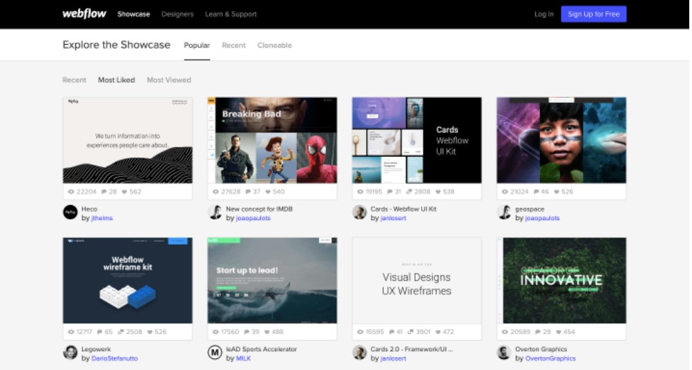

Web design for beginners: a simple (but complete) guide
Just getting started in web design? This guide will get you ready to tackle your first project as a beginner.
FREE COURSE
Ultimate web design
From 101 to advanced, learn how to build sitesnin webflow with over 100 lessons-including the basics of HTML and CSS.
Web design is a crucial component of the web development process. If you're interested in web design, we're guessing you have a creative streak. And how could you not be excited about jumping in and making your first website? Web design is about crafting a functional piece of art — but where do you start? If you're wondering what you need to know before you begin, this guide will help you out.
Choose something basic for your first site design
This seems like a no brainer, right? But sometimes we can get overly ambitious and end up discouraged. For your first project, it’s a good idea to choose something simple and fun. An ecommerce site is more complicated and would be better to tackle once
you have more experience.
A blog is a great place to start. It will be a good design exercise and you’ll learn how a Content Management System (CMS) works, which will be important to know for future site designs. Best of all — you don’t have to start from
scratch. There are plenty of blog templates that make it easy to put one together.
Templates are a valuable learning tool. Watching how HTML, CSS, and Javascript elements are styled and come together will give you deeper insight into what makes a design work. You can use templates as a foundation to make changes
and customizations.
Maybe you don't want to start a blog — try pulling from your creative pursuits or hobbies. How about building a showcase for your photography skills or for your collection of short stories? Creating a design to feature a passion
of yours makes for an enjoyable first project.
Find inspiration from other designers

You've no doubt come across websites that have wowed you with their stunning design.
Create an inspiration doc with links to sites you love, or bookmark them as you go. Pinterest is a great place to find great site design — you can find and pins illustrations, book covers, posters, blogs, and other types of design
work to refer to. Designers use the term "mood board" for these collections. Mood boards are a quick reference resource if you find yourself stuck. Which you will.
Outside the discoveries you make on your own, there are some curated collections you should check out.
Use the principles of design to guide your beginner web design process
Effective design is guided by certain rules and it’s important to understand essential web design skills before you start. There are standard practices that will simplify the process and make for a more refined final product.
Layout
If you want to design and build websites, understanding good layout is key. We suggest keeping things minimal and working with only a few elements to focus on the perfect placement.
When you first start designing, think grids. Grids align elements, like div blocks and images on a web page, in a way that creates order.
The structure of a layout should follow a visual hierarchy. What are the important ideas you want people to see and in what order? Visual hierarchy needs to adhere to the common patterns people use when reading. There are two paths
people’s eyes generally follow on the web: the F-pattern and the Z-pattern. Being familiar with how these patterns work will help you organize your own content.
The F-pattern is more common for designs with dense blocks of content. People’s eyes will scan down the left side of a layout until things catch their attention and then read from left to right. Imagine looking through the menu at
a restaurant — you may skip over the bold names of dishes aligned on the left until you come to something that grabs you, which will prompt you to read the supporting details explaining that specific dish.
Most people will read through something like a blog post in this F-pattern. With left-aligned text and bulleted sentences, Nelson Abalos takes advantage of this design technique, making his posts easy to navigate and follow.
The Z-pattern is associated with less text-heavy design. Many landing pages conform to this pattern. All the major elements on the Conservation Guide site adhere to the Z-pattern. If you’re a beginner web designer, this is a simple layout trick to help usability.
Colors
You have the colors of the rainbow and beyond available to you. And we all know that "with great power comes great responsibility." The power of the color picker can be wielded for good or evil.
Here are a couple straightforward approaches in choosing a color scheme for your first website.
Monochrome
Use a single color as the base, vary the amount of saturation, include lights and darks, and play with various hues for a uniform color scheme. Regardless of your niche, a monochrome site is a smart design choice. And remember, whatever
color you choose for the text, make sure you’re thoughtful about readability.
In this example from Unique, each section is delineated by a monochromatic color scheme. You don’t have to get this fancy in your beginner designs, but it’s nice to see their use of different monochromatic color variations. Notice
how each section is made of colors related to the featured bags? This is a nice design trick that makes for a harmonious color scheme.
Complementary
Take colors that are opposite on the color wheel and combine them. Easy enough, right?
Use complementary colors with care. In this design below from the Ignisis website, the designer used blue and orange in different combinations along with whitespace and greys for a layout that never tires the eyes. The contrast feels
crisp and refreshing.